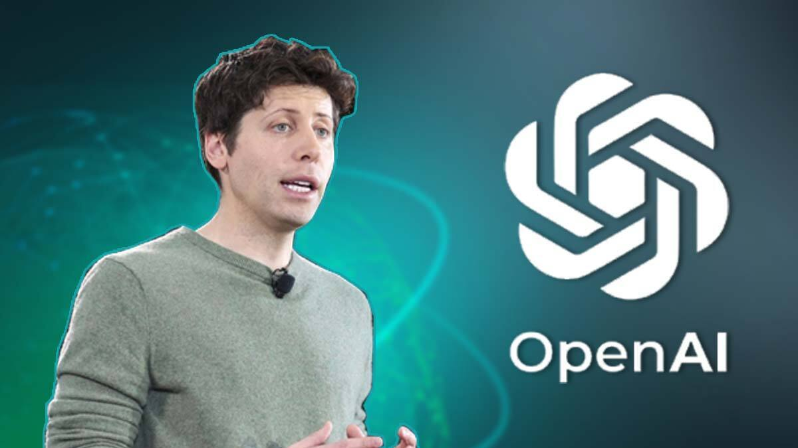

Samuel Harris Altman (Chicago, Illinois; 22 de abril de 1985), conocido como Sam Altman, es un empresario, inversionista, programador y bloguero estadounidense. Es director ejecutivo de OpenAI y expresidente de Y Combinator, y se le considera una de las figuras principales en el desarrollo de la inteligencia artificial.

Altman es el CEO de OpenAI. OpenAI es una empresa de investigación, que se inicia como una ONG, cuyo objetivo es promover la inteligencia artificial de una manera que probablemente beneficie a la humanidad en su conjunto, en lugar de causar daño.[32] La organización fue financiada inicialmente por Altman, Brockman, Elon Musk, Jessica Livingston, Peter Thiel, Amazon Web Services, Infosys y YC Research. En total, cuando la empresa se lanzó en 2015, había recaudado mil millones de dólares de financiadores externos.